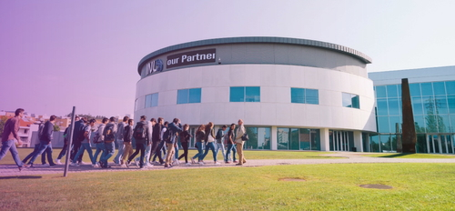
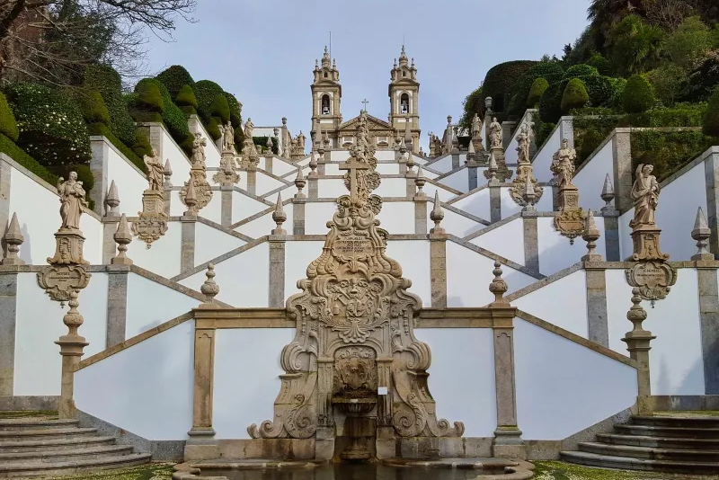
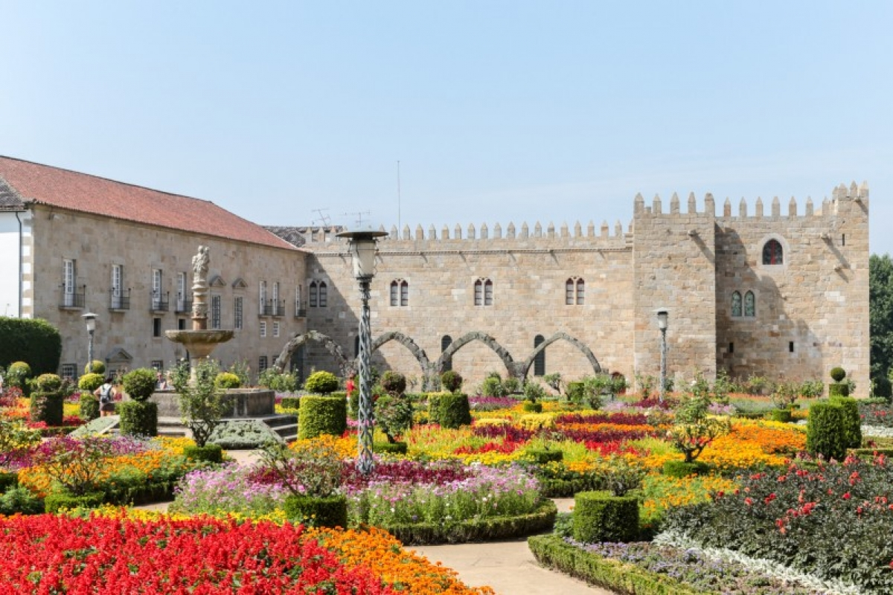

Meeting of IFIP WG 1.11/2.17
Foundations of Quantum Computation
6th–10th July 2026 @ INL, Braga, Portugal
Meeting of Working Group 1.11/2.17 Foundations of Quantum Computation of IFIP – International Federation for Information Processing.
Registration
Please complete payment of the registration fee (€230) through this link.
The fee goes towards covering (coffee breaks and lunches), social dinner on Tuesday 7th, and accommodation for non-local participants. See practical info below
Schedule
9.30 to 18.00 (Monday to Thursday)
9.30 to 13.00 (Friday)
Dynamic scheduling in this shared Google document.
Rooms: Conferece Room (every day) + Vision Room (most days)
Morning coffee break: 10.30
Lunch: 13:00
Afternoon coffee break: 16:30
Social dinner: Tuesday 7th July at 19.30 @ Rima.
Participants
Aleks Kissinger (organiser)Rui Soares Barbosa (organiser, local)
Miriam Backens
Luís Soares Barbosa (local)
Ross Duncan
Chris Heunen
Renato Neves (observer, local)
José Nuno Oliveira (observer, local)
Jennifer Paykin
Luís Paulo Santos (local)
Benoît Valiron
John van de Wetering (observer)
Vladimir Zamdzhiev
Accommodation Info
Acommodation has been booked at the INL guesthouse (inside the INL campus, see below) or at Holiday Inn Braga.
For those staying at the hotel, breakfast is included with the room.
Those staying at the guesthouse may get breakfast at the INL cafeteria, which opens at 8am. Just give your name and say that you are here for the IFIP meeting.
How to get here?
Braga is just a 40-minute car ride from Porto International Airport (OPO).
There are (fairly) regular direct buses from OPO, mainly operated by GetBus (also less regular services by Alsa or Flixbus).
Taxis or rideshares are also available and usually not too expensive.
Alternative airports are the smaller Vigo International Airport (VGO) or the larger Lisbon International Airport (LIS). From Lisbon, a train or bus to Braga takes about 3.5 hours.
Venue

The INL – International Iberian Nanotechnology Laboratory, located in Braga (North of Portugal), was founded by the governments of Portugal and Spain under an international legal framework to perform interdisciplinary research and deploy and articulate nanotechnology for the benefit of society. INL aims to become the worldwide hub for nanotechnology addressing society’s grand challenges.


Braga is one of Portugal’s most beautiful cities and its third largest. Considered one of the youngest European cities it’s packed to the brim with history and culture, of which the most famous is probably Bom Jesus do Monte, a World Heritage site by UNESCO.